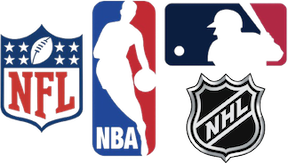

About Major League Sports
- Major League Sports refer to the top professional sports leagues in North America, consisting of the (NFL), (NBA), (NHL), and Major League Baseball (MLB).
- These leagues attract millions of fans worldwide and are known for their high level of competition, talented athletes, and rich history.
History of Major League Sports
- Explore the fascinating history of major league sports, from their origins to the present day. Learn about key milestones, significant events, and the evolution of each sport over time.
Fan Engagement
- Discover the importance of fan engagement in major league sports, including fan traditions, fan communities, and the impact of social media on fan interaction. Explore how fans contribute to the excitement and atmosphere of sporting events.
Player Profiles
- Meet some of the most iconic players in major league sports history. From legendary quarterbacks to basketball superstars and hockey legends, learn about the athletes who have left an indelible mark on their respective sports.
Team Profiles
- Get to know the famous teams that have shaped the landscape of major league sports. From storied franchises with rich traditions to up-and-coming contenders, explore the history, achievements, and fanbase of each team.
Championships and Trophies
- Discover the various championships and trophies awarded in each major league sport. From the Super Bowl to the Stanley Cup, explore the history, significance, and prestige of these prestigious awards.